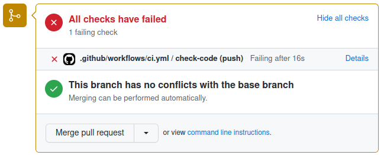

Using GitHub actions for continuous integration
Last updated on 2025-10-16 | Edit this page
Estimated time: 40 minutes
Overview
Questions
- What is meant by continuous integration (CI) and what are the benefits?
- What tasks can be automated in CI?
- How do I set up CI using GitHub Actions?
- How do I know if CI runs are passing and what should I do if they are failing?
- What should I do if I can’t replicate failing runs locally?
Objectives
- Understand the role of Continuous Integration (CI) in collaborative development
- Know how to write a simple GitHub Actions configuration file
- Be able to design a CI workflow for a variety of projects
Motivation for CI
Individual styles and preferences
Developer 1 - “Tabs!”
Developer 2 - “Spaces!”
Developer 1 - “TABS!”
Developer 2 - “SPACES!”
GitHub Actions automatically runs checks on your code.
Explanation of CI
Continuous integration (CI) is a software development practice that ensures all contributions to a code base meet defined criteria (e.g. formatting or testing conventions). This is enforced via computational workflows that apply checks and tests to a code commit. Failure of these workflows to complete successfully is indicated via the code hosting platform and can be used to block code from being merged into branches.
CI is often paired with additional workflows that run after a code contribution has been accepted. These workflows are often used to publish or deploy the code for use, a practice known as continuous delivery (CD). Generally the terms CI, CD or CI/CD can be used somewhat interchangeably to refer to any computational workflows that are triggered by and influence changes in a code base for a variety of purposes.
CI is carried out by a CI (or CI/CD) system. There are a wide variety of CI systems available. Some are closely integrated with a particular code hosting platform (e.g. GitHub Actions for GitHub, GitLab CI/CD for GitLab), others are provided as third-party online services (e.g. CircleCI, Travis CI) and others are designed for you to setup and run yourself (e.g. Jenkins, Buildbot).
We’re going to look at how to setup and use GitHub Actions for the following reasons:
- It is the integrated CI system for GitHub.
- It is hosted online without the need to register for additional services/accounts.
- The College has invested in a Licence for GitHub that brings additional benefits.
Introduction to GitHub Actions
There are two requirements to use GitHub Actions:
- You must have a repository on GitHub with Actions enabled. This is the default in the majority of circumstances but Actions may be initially disabled on a fork. You can check by going to the Actions Settings in the GitHub user interface (under Settings -> Actions -> General).
- Your repository must contain a workflow file in the directory
.github/workflows. A workflow file contains the instructions that specify when your CI should run and what to do when it runs. You can have as many workflow files as you want and they will all run simultaneously.
Configuring and Running GitHub Actions
An example of a very simple workflow file is below:
YAML
on:
- push
jobs:
check-code:
runs-on: ubuntu-latest
steps:
- uses: actions/checkout@v3
- run: echo 'hello world'This roughly translates to the following: “When I push new code to GitHub, use the Ubuntu operating system to checkout the code and then run the specified command”.
YAML File Format
You may not have encountered the YAML file format before. YAML is very commonly used for configuration files because it allows the definition of structured data whilst also being pretty easy for people to read.
That being said, it can take a moment to get your head around. When starting out it’s generally best to start with an example and modify it. We’ll break down the meaning and structure of this YAML file as we go.
Let’s breakdown the example workflow file in a bit more detail:
This describes the condition that will trigger the workflow to run. To add another trigger you would add another indented line with a dash, e.g.
This will additionally trigger the workflow to run when a pull request is created. The “push” and “pull_request” triggers are probably the most commonly used however, there are a great many available (see GitHub Docs: Events that trigger workflows). This is an example of where GitHub Actions goes further than most CI systems as you can automate pretty much any behaviour in a repository.
Next chunk:
Workflows are composed of jobs that in turn are composed of steps. In
the above we create a job called check-code by creating an
entry in the jobs section. We specify that the job should
run on the most recent version available of Ubuntu (a flavour of Linux).
Then we go on to define the steps within the job. To add another job to
this workflow we would add another entry with the same indentation as
check-code with a different name and its own
runs-on entry and steps.
You can read more about jobs at GitHub
Docs: Using jobs in a workflow. The behaviour of jobs can be
extensively modified. You can create dependencies between jobs so that
job-2 will only run if job-1 finished
successfully. Or you can provide additional expressions to limit when a
job should run e.g. only run a job for a particular branch. You can also
define a single job that is run multiple times with different parameters
using a matrix. This can be used, for instance, to test code on multiple
different operating systems with different versions of Python. See GitHub
Docs: Using a matrix for your jobs for more information.
Individual steps within a job define the actual work to be carried
out. The workflow above defines two steps that work in different ways.
The first step has a uses entry to indicate that it should
use a pre-packaged action. This is a powerful feature of GitHub Actions;
individual job steps can be packaged and shared for use in workflows in
different repositories. Actions that have been packaged this way can be
found in the GitHub
MarketPlace. Here we’re using version 3 of the checkout
action which is almost always the first step in any job. The
checkout action will create a copy of your repository’s
code ready for following steps in the job.
The default behaviour of the checkout action is quite
smart. It tries to check out the correct version of your code based on
the context of the workflow. For instance, it will checkout a newly
pushed branch if that is the event that triggered the workflow. You can
modify the behaviour of individual actions by passing a
with section. For instance you can make the action checkout
a different version of your code or checkout code from a different
repository entirely. See GitHub Market
Place: Checkout Action for details.
The second step does not use a pre-packaged action but instead has a
run entry. This allows us to execute some custom code. As a
general rule, if you can find a pre-packaged action in the Marketplace
that does what you want, use it, and only fall back to running custom
code if necessary. For more detail on custom job steps see GitHub
Docs: Job Step Workflow Syntax.
Once those two steps have completed, the CI run is finished. What happens next depends on what happened during the job steps. If any step did not finish successfully, but instead generated an error, then the CI run is considered to have failed. Successful CI runs are marked in the GitHub UI with a green tick next to the commit; failed runs have a red cross.
Adding CI to Your Recipe
Let’s look at adding some useful CI to the recipe repository. We’re
working with Markdown files so it would be helpful to enforce a
consistent style to avoid differences between authors. Well do this by
adding a workflow that runs the markdownlint-cli action.
This action runs markdownlint-cli,
a tool that checks markdown files against a set of criteria.
Create a
.githubdirectory in your project then create aworkflowsdirectory within that.Create a file called
ci.ymlin theworkflowsdirectory.Add the following contents to
ci.yml:
YAML
on:
- push
jobs:
markdownlint:
runs-on: ubuntu-latest
steps:
- uses: actions/checkout@v3
- name: markdownlint-cli
uses: nosborn/github-action-markdown-cli@v3.2.0
with:
files: .Stage and commit
ci.ymlthen push the repository to GitHub.Your first CI run should have been triggered! Quickly, go to your repository on GitHub and select the
Actionstab. You should see a workflow with a glowing amber dot next to the commit message you provided. This means that the workflow is running.Click on the commit message. You now get a breakdown of the individual jobs within your workflow. It’s only one job in this case -
markdownlint- click on it to see its progress. You can see the individual steps, and the output that they produce as they run.Before long the workflow will complete but, alas, it should be a failure. Go back to the front page of the repository by clicking the
Codetab. You should see your commit marked with a red cross to indicate that it failed the CI. You should also receive a notification (after a few minutes) via the email address associated with your GitHub account.Return to the
Actionstab and open the failed workflow. You should see a handy summary of the errors that were encountered during themarkdownlintjob. You now need to correct bothingredients.mdandinstructions.mdso that the CI will pass. Hint: see markdownlint-cli: Rule MD041.Once you’ve modified the files stage, commit and push once again. Your next CI run should succeed. If it doesn’t then try modifying the files again.
Once the CI is passing, go back to the
Codetab and you should see a nice green tick next to your latest commit.
Using CI with Pull Requests
We’ve seen some basic usage of GitHub Actions but, so far, its only utility is adding a tick or cross in the GitHub UI. That’s good, but CI can be even more useful when combined with pull requests.
Let’s say we’ve created a new branch that we want to merge into main. If we create a pull request but our CI is failing in the new branch, we’ll see something like the following:

{alt=‘Failing CI’ class=“img-responsive”}GitHub makes the failure of the CI pretty apparent but, by default, it will still allow the PR to be merged. At this point the CI is a useful aid to peer review but we can take things further by implementing some policy in the form of a “branch protection rule”. We can use this to put two restrictions in place:
- No code can be pushed directly to the
mainbranch, it must always be added via pull request. - All CI workflows must succeed in order for PR’s to be allowed to merge.
Combined together these rules mean that no code can end up in
the main branch if it did not successfully pass through CI
first. Creating a cast iron guarantee that all code that has
been accepted into the main branch meets a certain standard
is very powerful.
Let’s see how to create a branch protection rule and how this changes the behaviour of PR’s:
- Go to the
Settingstab and selectBranchesfrom the left-hand side. - Select
Add classic branch protection rule. - Set
mainas theBranch name pattern. Check the box forRequire a pull request before mergingand in the options that appear below it, you can select the number of approvals required for merging (default is 1). - Also check the box for
Require status checks to pass before merging. In the extra options that appear beneath, checkRequire branches to be up to date before merging. Using the search bar, find and select the names of any CI jobs that must pass to allow merging. - Scroll down and press
Create. GitHub may ask you to confirm your password.
Now a CI failure for a pull request looks like this:
{alt=‘Failing CI’}({{ site.baseurl }}/fig/pr_protected_failing_ci.png”Panel from GitHub pull request user interface showing failing CI checks with merging blocked due to a branch protection rule”){:class=“img-responsive”}
Now it’s much harder to get anything past peer review that doesn’t meet the required standard. There remains an option to “bypass branch protections” but this is only available to administrators of the repository and can be removed by further refining the rule.
No Such Thing as a Free Lunch
Despite concerted efforts to look like your best mate, GitHub is in fact trying to make money. At the end of the day GitHub Actions uses computational power which costs (even if you are owned by Microsoft). The practical upshot is that there are limits on the usage of GitHub Actions. In brief:
- Current usage limits and billing policies can be found at GitHub Docs: About billing for GitHub Actions.
- GitHub Actions is free for publicly accessible repositories.
- GitHub Actions for private repositories is restricted (see above link).
- Imperial College pays for a GitHub licence that provides compute minutes and storage even for private repositories. You must be a member of the ImperialCollegeLondon GitHub organisation and your repository must be created within the organisation to benefit. Details of how to join the organisation can be found at the Gain Access to Imperial College London GitHub organisation article.
- Billing varies depending on the operating system used by your jobs. Running on Windows or MacOS is more expensive.
Ways to use CI
Now that we’ve set up and configured GitHub Actions, what can we use it for? The GitHub Marketplace is a good place to get ideas but the number of available actions can be overwhelming.
Enforce Style and Formatting
One of the simplest uses of CI is to enforce common style and formatting standards to code. The below workflow runs Flake8 to check that all Python code in the repository conforms to the PEP8 style guide. Having this workflow ensures that all code added to the repository has a consistent style and appearance.
Build Software
Depending on your project you may have a compile or build step needed to make the software usable. An example is given below of building a project using the CMake toolchain. Common compilers (e.g. gcc, g++) and tools (e.g. Make) are pre-installed but you may need additional setup actions if you have specific requirements for different versions.
The value of this kind of workflow is pretty straightforward. You can check that a freshly checked out version of your code can be successfully built. You can run similar builds across a variety of operating systems and compilers to ensure broad compatibility.
Run Tests
Writing tests is an important best practice for software development. Even better is incorporating tests into your CI so you know they pass in a newly checked-out repository on another computer.
The below shows an example of running the tests of a Python project:
Publish
Once we’ve accepted changes into our repository it can then be useful
to trigger a publish action. The below workflow builds and publishes a
Docker image only when new commits are added to the main
branch. Docker is a tool for packaging and distributing software along
with all of its requirements. Once published the Docker image can then
be downloaded and used by other users or services.
{% raw %}
YAML
on: push
jobs:
publish:
runs-on: ubuntu-latest
if: github.ref == 'refs/heads/main'
steps:
- name: Login to GitHub Container Registry
uses: docker/login-action@v1
with:
registry: ghcr.io
username: ${{ github.actor }}
password: ${{ secrets.GITHUB_TOKEN }}
- name: Get image metadata
id: meta
uses: docker/metadata-action@v3
with:
images: ghcr.io/${{ github.repository }}
- name: Build and push Docker image
uses: docker/build-push-action@v2
with:
push: true
tags: ${{ steps.meta.outputs.tags }}{% endraw %}
A Realistic Example
If we put together a few things we’ve seen so far, we can start to build more realistic and useful workflows. The below example is taken from a template for Python repositories (see Github Python Poetry Template Repository).
{% raw %}
YAML
name: Test and build # workflows can have a name that appears in the GitHub UI
on: [push, pull_request, release]
jobs:
qa:
runs-on: ubuntu-latest
steps:
- uses: actions/checkout@v3
# pre-commit is a useful tool to setup and run all of your QA tools at once
# see https://pre-commit.com/
- uses: pre-commit/action@v3.0.0
# this job checks that any links included in markdown files (such as the README) work
check-links:
runs-on: ubuntu-latest
steps:
- uses: actions/checkout@v3
- uses: gaurav-nelson/github-action-markdown-link-check@v1
name: Check links in markdown files # individual steps can also have names
with:
use-quiet-mode: 'yes'
use-verbose-mode: 'yes'
test:
needs: qa
runs-on: ${{ matrix.os }} # example of how jobs can be parameterised
strategy:
fail-fast: false
matrix: # here we use a matrix to test our project on different operating systems
os: [ windows-latest, ubuntu-latest, macos-latest ]
python-version: [ 3.9 ]
steps:
- uses: actions/checkout@v3
- uses: actions/setup-python@v4
with:
python-version: ${{ matrix.python-version }}
- name: Install Poetry
uses: abatilo/actions-poetry@v2.1.6
with:
poetry-version: 1.1.14
- name: Install dependencies
run: poetry install
- name: Run tests
run: poetry run pytest{% endraw %}
- Continuous Integration (CI) is the practice of automating checks of code contributions
- GitHub Actions is a CI system provided by GitHub
- GitHub Actions is configured via a YAML file in the directory
.github/workflows - GitHub Actions comprise individual steps combined into workflows
- Steps may run a pre-existing action or custom code
- The result of a GitHub Actions run can be used to block merging of a Pull Request
- CI can be used for a wide variety of purposes